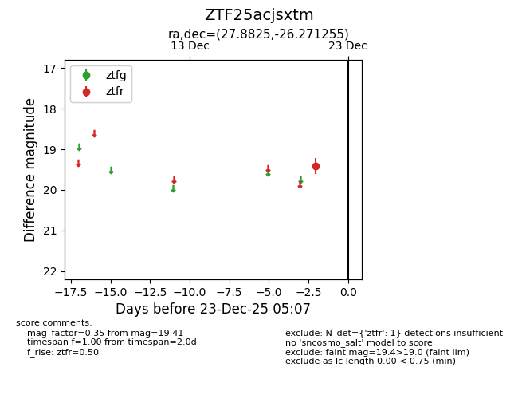
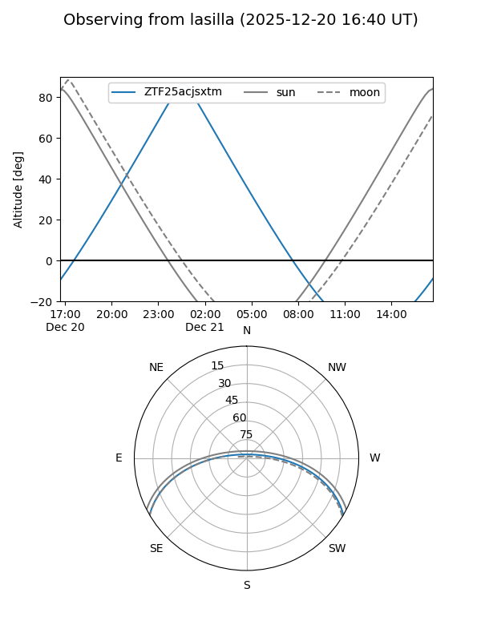
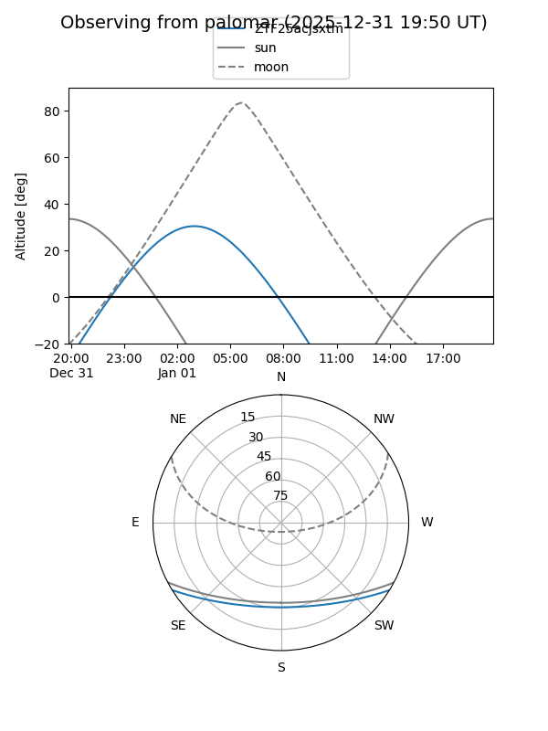

ZTF25acjsxtm
Target ZTF25acjsxtm at 2025-12-21 05:08
Aliases and brokers:
FINK: fink-portal.org/ZTF25acjsxtm
Lasair: lasair-ztf.lsst.ac.uk/objects/ZTF25acjsxtm
ALeRCE: alerce.online/object/ZTF25acjsxtm
alt names
ZTF25acjsxtm (ztf,fink_ztf)
Coordinates:
equatorial (ra, dec) = 27.8825,-26.27126
equatorial (HMS+DMS) = 01:51:31.79,-26:16:16.52
galactic (l, b) = (212.6899,-76.55953)
Flags:
Photometry:
last ztfr=19.41
1 ztfr detections
Lightcurve

Visibility


Additional plots